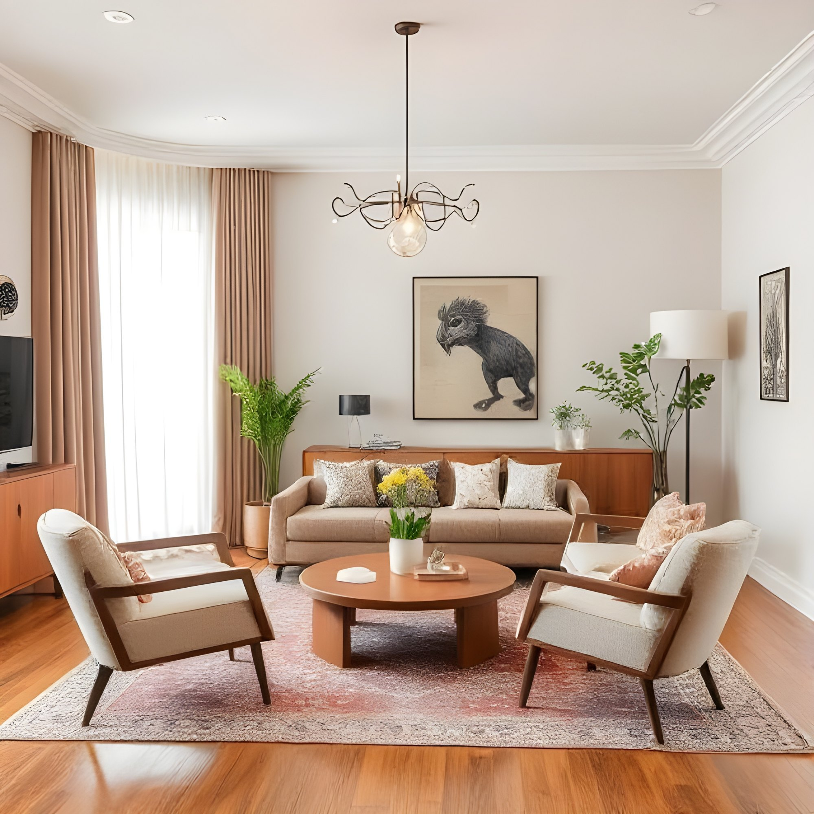

Interior design is the art and science of enhancing the interior of a building to achieve a healthier and more aesthetically pleasing environment for the people using the space. With a keen eye for detail and a creative flair, an interior designer is someone who plans, researches, coordinates, and manages such enhancement projects. Interior design is a multifaceted profession that includes conceptual development, space planning, site inspections, programming, research, communicating with the stakeholders of a project, construction management, and execution of the design. Interior designers make use of fundamental design principles from the visual arts used to help viewers understand a given scene.
The pursuit of effective use of space, user well-being and functional design has contributed to the development of the contemporary interior design profession. The profession of interior design is separate and distinct from the role of interior decorator, a term commonly used in the US; the term is less common in the UK, where the profession of interior design is still unregulated and therefore, strictly speaking, not yet officially a profession.


Interior design furniture and fixture sourcing is the strategic process of researching, selecting, and procuring the movable furnishings and permanently affixed elements that bring a design concept to life. It involves balancing client aesthetics, budget, and spatial needs with product lead times and supply chain availability

An interior modular kitchen is a highly functional, customizable cooking space built from pre-manufactured cabinet modules. Rather than building fixed structures on-site, these factory-finished sections—such as base cabinets, wall units, and pull-out trolleys—are assembled together to optimize storage and seamlessly fit your specific layout

Interior wall paneling is a functional and decorative millwork technique that covers walls with rigid or semi-rigid boards like wood, MDF, PVC, or charcoal composites. It transforms flat spaces by adding texture, architectural depth, and character. Additionally, these panels provide thermal and acoustic insulation while effectively hiding structural flaws or wiring.